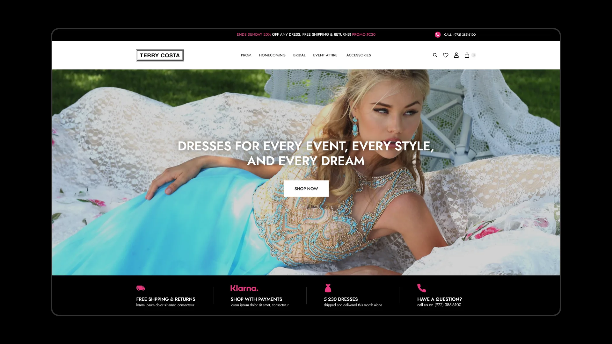

Clinical workflows and data dashboards for teams who can’t afford a wrong click — interaction logic defined with medical staff, edge cases documented for engineering.
Every case, in one place
Pharmacovigilance, fintech KYC, multi-device hospitality — and the client work beyond them

KYC and identity verification rebuilt end to end — discovery through usability testing — to cut drop-off without removing a single compliance step.
One digital ecosystem for passengers and crew across 65-inch displays, tablets, and mobile — each with its own interaction model. The crew tablet redesign is what cut boarding time in half.

A two-sided Talent Decision Engine — separate flows and information architecture for engineers finding remote work and enterprises hiring at scale.

A decade-old scheduling platform with 50+ integrations across 7 industries, restructured into one clear, conversion-focused site.

Brand and product platform built from zero for a Nashville FSBO startup, letting homeowners list, price, and manage a sale without an agent.

A rebuilt identity and a black-and-purple palette carried from hero banner to hang tag, replacing the nude-and-gold look every competing bridal boutique defaults to.
An image-first browsing experience for a South Florida luxury agency, built to earn trust before a buyer ever picks up the phone.

A unified POS and inventory platform replacing a paper catalog and a disconnected register system with one real-time source of truth.